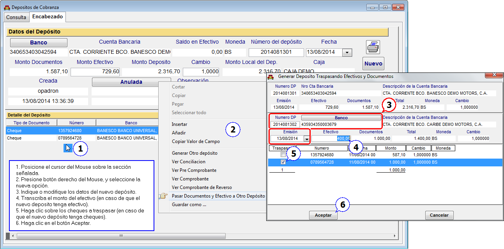

|
Menú Bancos |
  
|
|
Menú Bancos |
|
Traspasar Cheques y Efectivo a Otro Depósito
Desde el Módulo de Administración "Menú CXC" opción >>Depósitos>>Depósitos de Documentos>>, podrá generar otro depósito separando los cheques o documentos y el efectivo que ya fueron depositados en algún momento. Esto es en particular para aquellos casos en los que se registra un depósito de los ingresos del día (cobranzas y anticipos de clientes), y por alguna razón o circunstancia el soporte del depósito que se envió al banco, se realizó con otros montos, y en otro banco totalmente distinto a como se registro en Infoauto, inicialmente. Entonces, en vez de anular el depósito registrado, ahora podrá crear un nuevo depósito con los datos correctos.
Figura. Generar Nuevo Depósito

Volver a Índice de Módulo Administrativo
Volver al Índice de Módulos Operativos